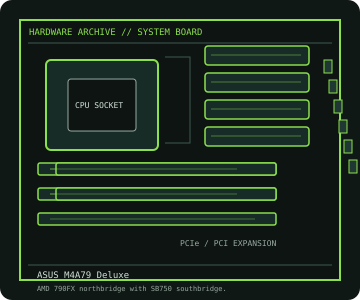

[ INDIVIDUAL COMPONENT // MOTHERBOARDS ]
ASUS M4A79 Deluxe
AMD 790FX multi-GPU ATX board for AM2+/AM2 processors, with DDR2 memory and legacy PATA/eSATA connectivity. CPU support must be checked against the precise model table.

IDENTIFICATION: Confirm the full model name, printed PCB revision and firmware identifier on the physical board. Variants with similar names may differ in CPU support, BIOS, memory and connectors.
Specifications
| Catalog subcategory | AMD Socket platforms |
|---|---|
| Exact board / model | ASUS M4A79 Deluxe |
| Era / platform | Socket AM2+ / AMD 790FX + SB750, 2009 |
| CPU and socket | AM2+/AM2 processors and selected AM3 CPUs only where listed by ASUS for this board and BIOS. |
| Chipset / controller | AMD 790FX northbridge with SB750 southbridge. |
| Memory | Four DDR2 DIMM slots, dual-channel, up to 16 GB; board documentation specifies memory type and population restrictions. |
| Form factor | ATX (305 × 244 mm) |
| Expansion and storage | Four PCIe 2.0 x16-length slots for multi-GPU configurations, one PCIe x1 and two PCI slots; six SATA 3 Gb/s, two eSATA and one PATA connector. |
| Firmware compatibility | Use the exact model and board revision support page. Check CPU support and minimum BIOS before fitting a processor; do not flash firmware intended for a similarly named board. |
Compatibility and revision notes
The M4A79 Deluxe is an AM2+/DDR2 model and is not the M4A79T Deluxe. Use the exact board CPU support list before fitting an AM3 processor; DDR3 is electrically incompatible.
Before installation, check the manufacturer’s model-specific CPU support table and manual. Verify the power supply, cooler, chassis clearance, memory population rules and any shared PCIe or SATA lanes for the intended configuration.
Preservation and repair
Check the AM2+ socket retention hardware, northbridge cooling and SATA/eSATA headers. Record BIOS version before CPU swaps and follow the manual for DDR2 population and CMOS recovery.
For an archive record, photograph PCB labels before cleaning and note serial/date codes, firmware, accessories, known faults, repairs and test conditions. Use ESD-safe handling; do not energize a board with loose conductive hardware beneath it.
Sources & further reading
- ASUS M4A79 Deluxe manualsManufacturer board manual with installation, memory and connector details.
- ASUS M4A79 Deluxe CPU support listModel-specific processor list and minimum BIOS versions.
Primary manufacturer documentation is the compatibility authority. Match the cited support table and manual to the exact model and PCB revision; do not transfer firmware or CPU claims between near-name variants.